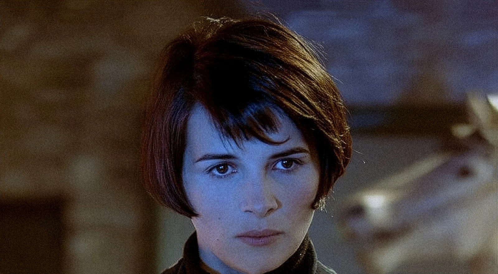
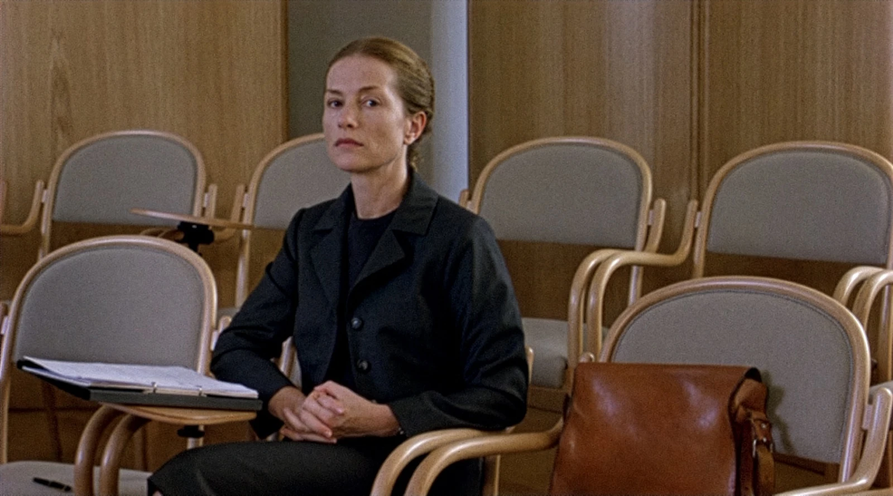
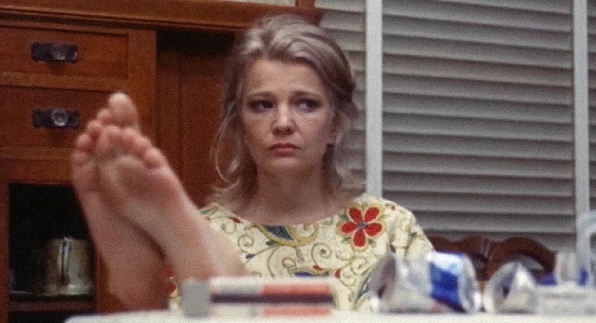
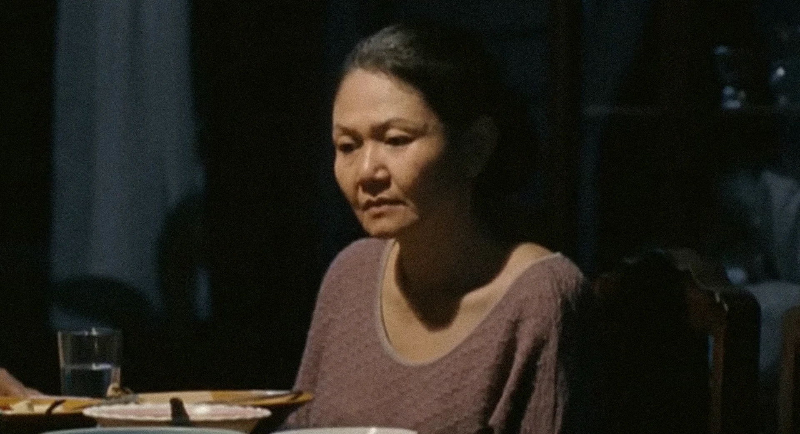
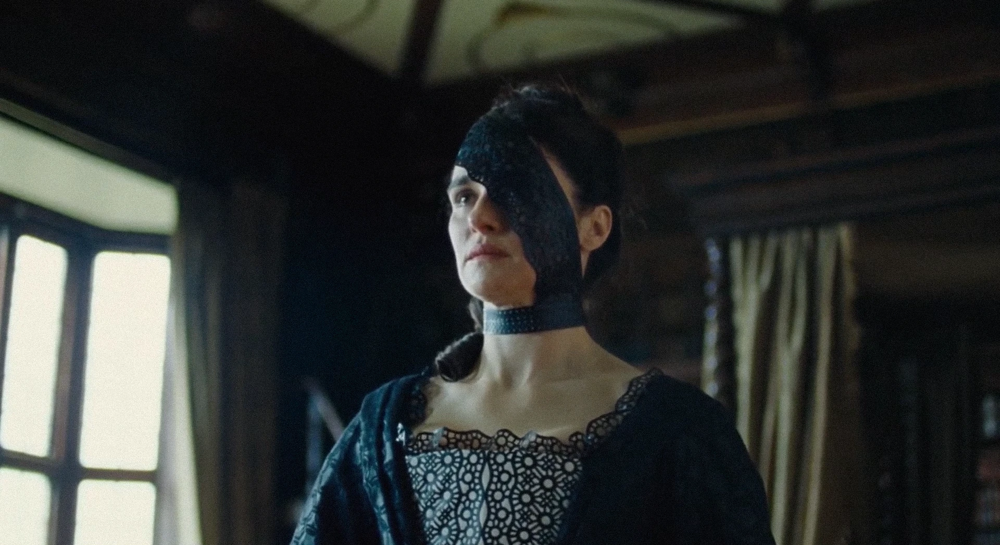
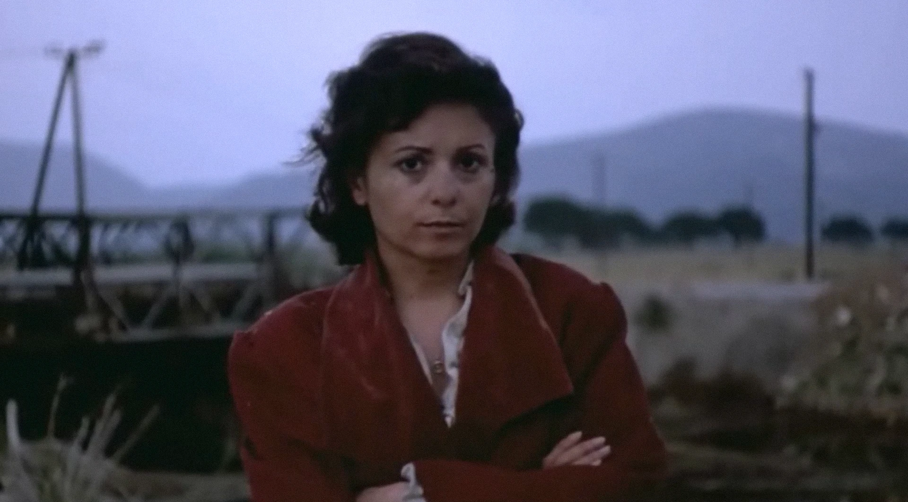

But the spasm is chaosmic, Suite op.9p
The intimate texture of being is breathing: only poetry as the excess of semiotc exchange can reactivate breathing. But the spasm is chaosmic, Suite op.9 is a collection of moments from films when the camera pauses in front of the characters as they breathe, a subtle pulse of whispers.






